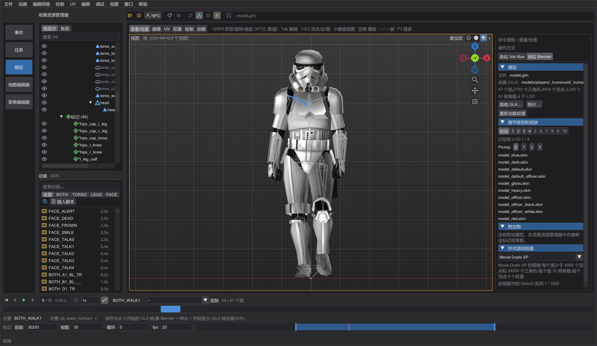
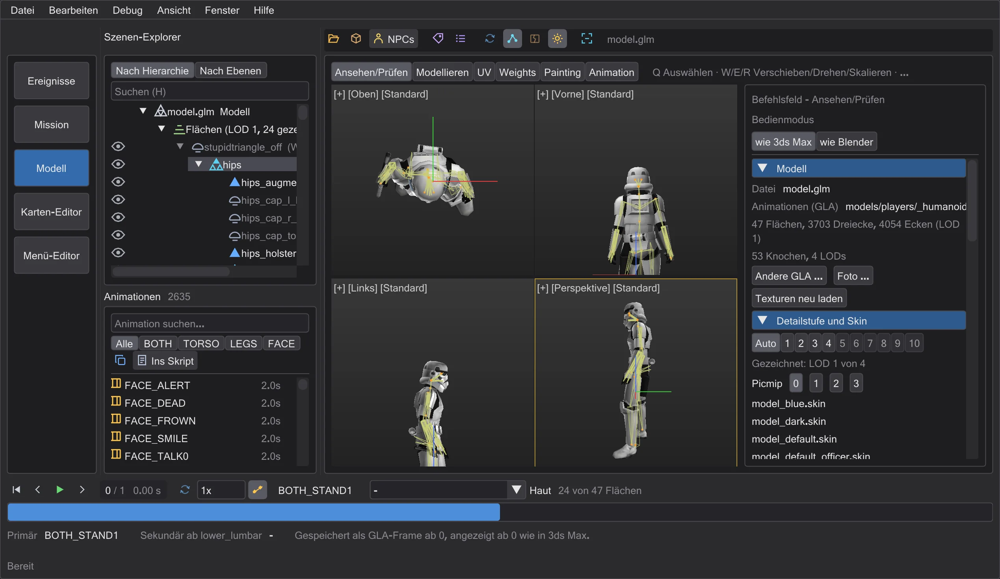
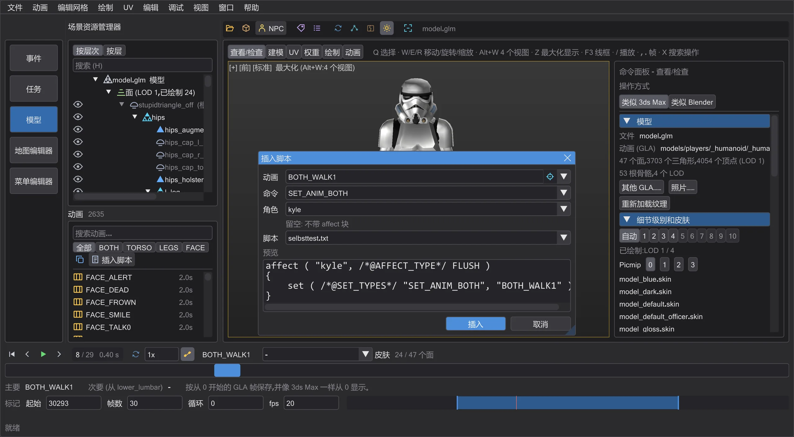

模型选项卡:像 3ds Max 或 Blender 一样操作
选择你熟悉的操作方式——模型选项卡随后使用 3ds Max 或 Blender 的按键、视图和骨骼显示。它没有脚本部分;动画通过 "插入脚本" 窗口进入脚本。

单击选项卡状态栏左侧的操作模式、在视图标题栏的菜单 (操作方式) 中、在设置中或通过搜索所有操作, 可在 类似 3ds Max 和 类似 Blender 之间切换;设置会被记住并立即生效 - 包括按键、鼠标和布局 (模型选项卡: 像 Blender 的布局)。像 3ds Max:四个视图 (Alt+W)、骨骼对象、带 Gizmo 的 Q/W/E/R、子对象级别 1 顶点、2 边、3 边界、4 多边形、5 元素、6 对象,时间轴从 0 开始。像 Blender:一个视图 (Ctrl+Alt+Q 切换为四个)、八面体骨骼、G/R/S 配合 X/Y/Z (按两次: 局部, Shift: 平面) 和输入的数值,Enter 或左键确认,Esc 或右键取消;Tab 切换物体与编辑模式,1/2/3 顶点、边、面,小键盘 1/3/7 视图 (Ctrl 为对侧),5 透视,2/4/6/8 环绕 15°,Home 显示全部,空格播放,时间轴从 1 开始计数并在提示中显示 GLA 帧。X (3ds Max) 或 F3 (Blender) 搜索所有操作;鼠标右键打开视图菜单。
像 3ds Max 一样在视图中右键: 四元菜单。 四个象限在鼠标处相交: 右下为 transform (移动、旋转、缩放、选择、克隆、曲线编辑器、摄影表 ……), 右上为 display (孤立当前选择、全部解冻、冻结当前选择、全部取消隐藏、隐藏未选定对象、隐藏当前选择), 左上为 tools 1 (子对象层级和该区域的工具), 左下为 tools 2 (显示、权重、动画、脚本、测量)。移动、旋转和缩放与 W、E、R 一样设置工具; 当前工具会被标记。子菜单向外展开 - 左侧象限向左, 右侧象限向右; 在窗口边缘整个四元菜单会向内移动。像 Blender 时, 右键打开当前模式的上下文菜单, 顶部为 变换 (G、R、S)。
Esc 关闭模型选项卡的每个右键菜单 (视图、场景资源管理器、时间轴和摄影表、命令面板、工具栏) 以及菜单栏的菜单, 包括打开的子菜单, 与 3ds Max 和 Blender 相同; 这次按键不会触发其他操作。没有打开的菜单时, Esc 的作用与以前相同, 例如结束导航模式。
像 3ds Max 一样操作#
默认为 类似 3ds Max。在视图、资源管理器、命令面板或时间轴中单击后按键生效;X 列出全部按键。Gizmo 在模型文档中移动、旋转或缩放所选的面(所有细节级别)——Ctrl+Z 可撤销。
| 鼠标中键 / Alt + 中键 / 滚轮 | 平移 / 环绕 / 缩放 (Ctrl + Alt + 中键:拖动缩放) |
| 左键单击 / 拖动 | 选择面 / 框选 (Ctrl 添加,Alt 移除) |
| Q / W / E / R | 选择、移动、旋转、缩放 (F5 / F6 / F7 限制到 X / Y / Z,F8 平面,+ / - Gizmo 大小) |
| Alt+W / P T F L B / Z | 四个视图或一个 / 透视、顶、前、左、底 / 最大化显示 (所选) |
| F3 / F4 / G / J / 7 | 线框、带边面、网格、选择框、统计 |
| / , . Home End | 播放/停止、后退/前进一帧、首帧/末帧 |
| Ctrl+A / Ctrl+D / Ctrl+I / H | 全选、取消、反选;按名称选择 |

把动画放入脚本#
模型选项卡只用于模型:没有脚本树、没有按钮列、没有编译状态;文件 > 打开会打开模型,Ctrl+S 不会动脚本。要把动画放进脚本,请打开 插入脚本 (场景资源管理器顶部带脚本图标的按钮、右键单击序列、文件菜单或 Ctrl+Shift+I)。选择脚本 (已打开的或新建)、affect 块的角色 (留空: 无) 和命令——SET_ANIM_BOTH/UPPER/LOWER 或以动画长度为保持时间;预览显示该行,插入 以一个撤销步骤插入。动画字段中的小按钮使用场景资源管理器中选中的动画;Enter 插入,Esc 或 取消 关闭窗口。窗口关闭时不占空间。
